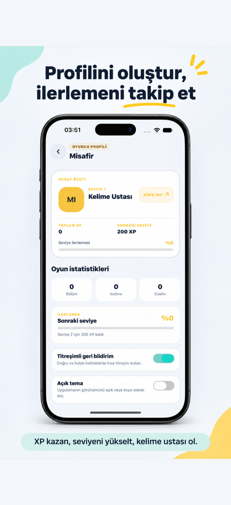
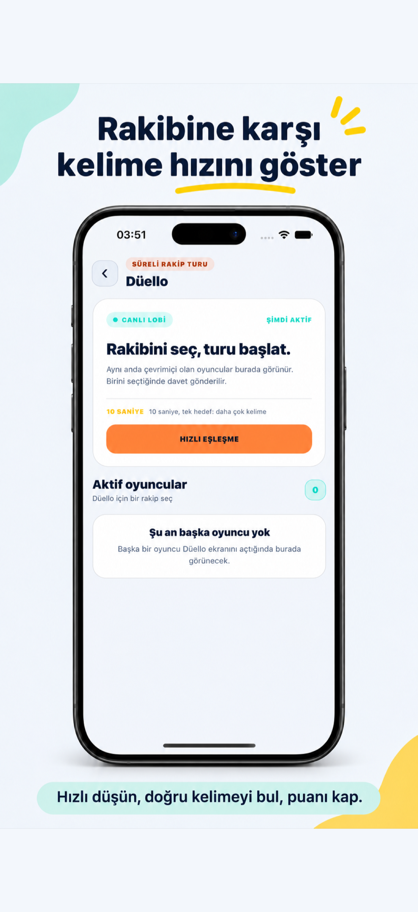
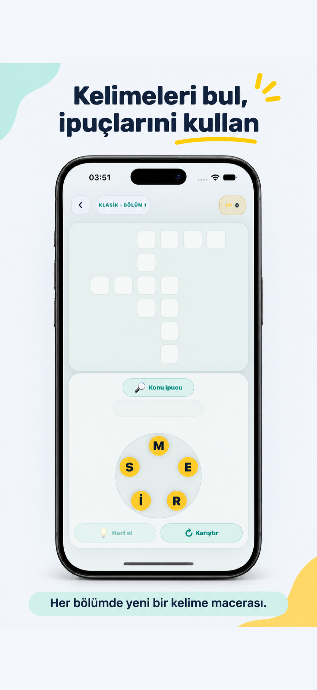
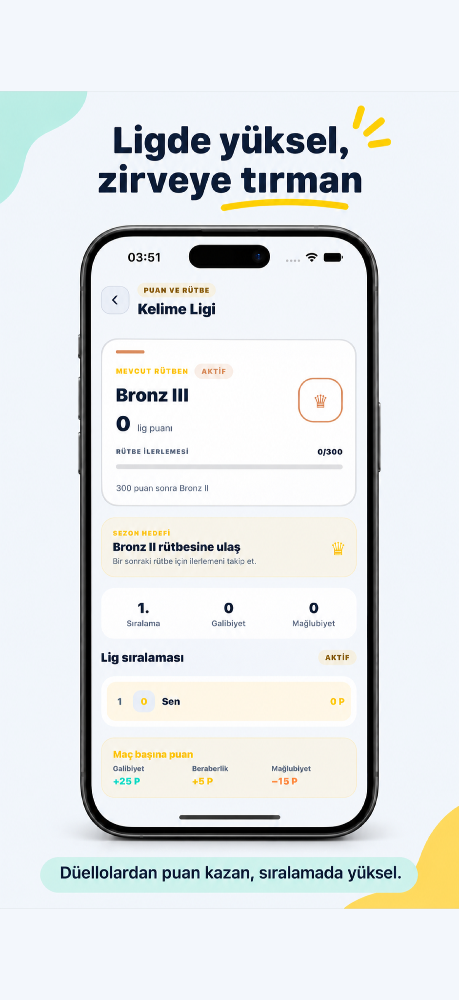

Klasik Kelime
Bölümleri sırayla çöz, ipuçlarını doğru yerde kullan ve kelime hazineni büyüt.
Kelimeleri bul, ipuçlarını kullan ve her gün birkaç dakikada yeni bir seviyeye ulaş. Sözcüko, kısa oyunları büyük bir kelime keyfine dönüştürür.



Tek başına ilerlemek, rakibine meydan okumak veya ligde yükselmek istediğinde oyun hep elinin altında.
Bölümleri sırayla çöz, ipuçlarını doğru yerde kullan ve kelime hazineni büyüt.
Rakibinden önce kelimeyi bul. Hızlı düşün, doğru hamleyi yap, puanı kap.
Düellolardan puan kazan, rütbeni geliştir ve sıralamada zirveye tırman.
İlerlemeni takip et, ipuçlarını zamanında kullan ve kendi kelime ritmini bul.

Bir sonraki bölümü aç, ilk düellonu başlat ve Sözcüko’da kendi kelime yolculuğunu kur.